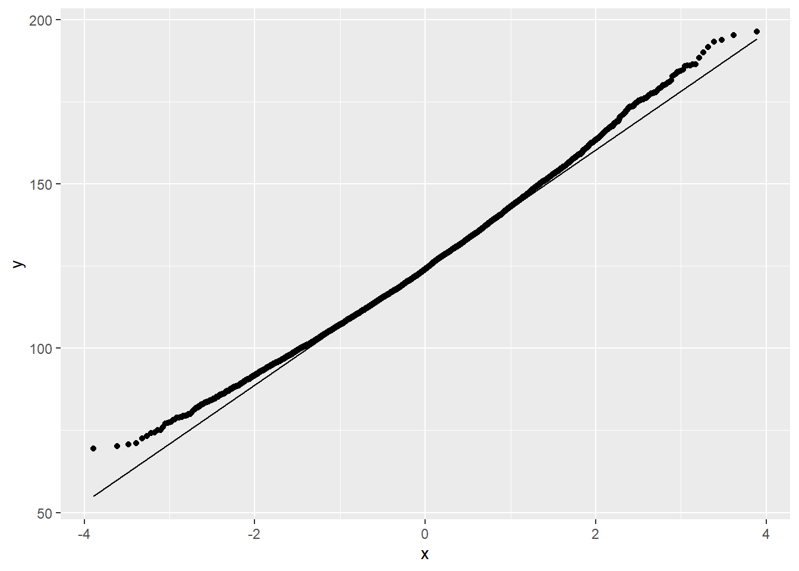
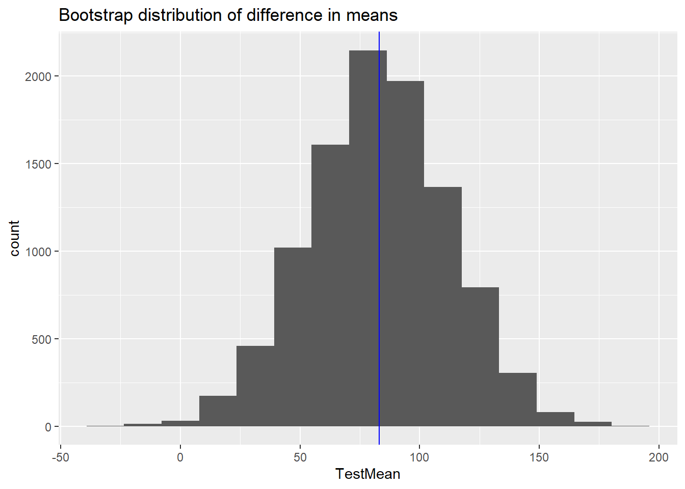
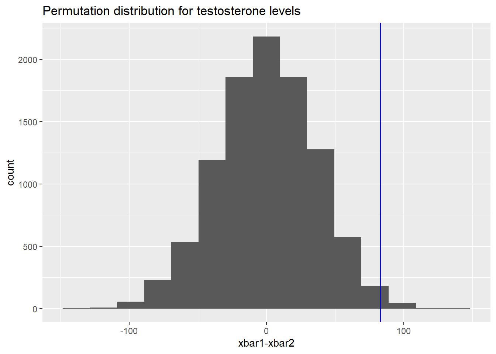
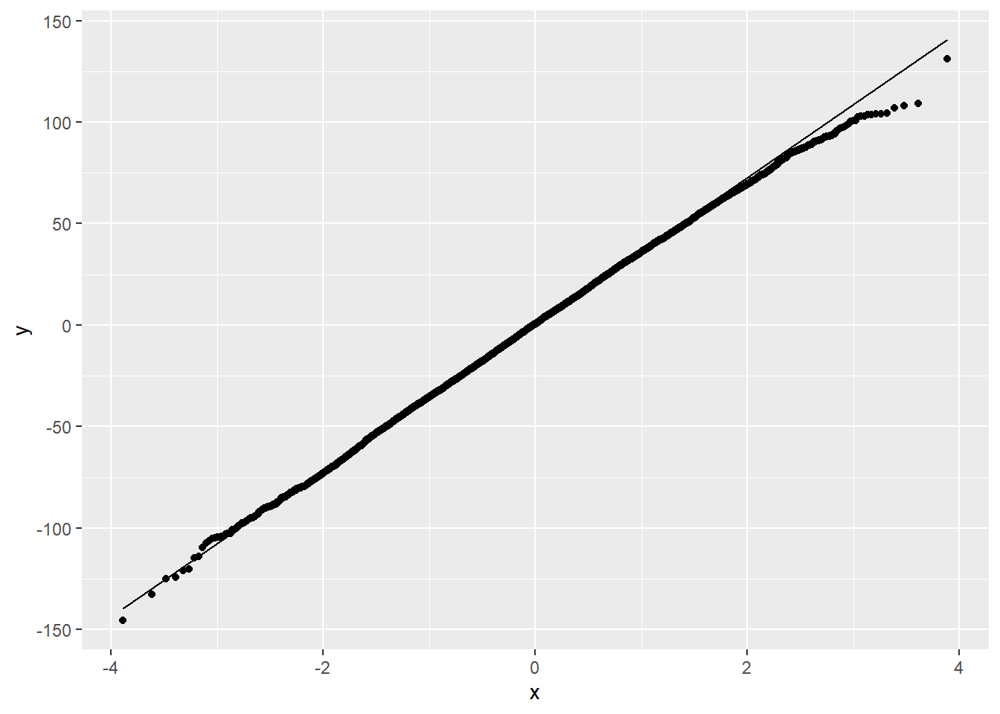
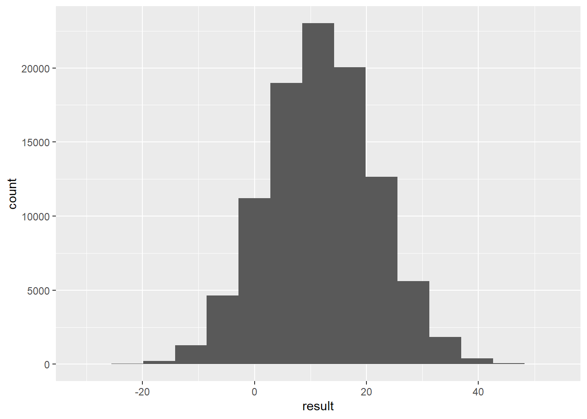

Show the Code

[1] 2.903[1] 0.6161081
[1] 2.903[1] 0.6161081Arsenic in wells in Bangladesh


Arsenic <- pull(Bangladesh, Arsenic)
#Alternatively
#Arsenic <- Bangladesh$Arsenic
n <- length(Arsenic)
N <- 10^4
arsenic.mean <- numeric(N)
for (i in 1:N)
{
x <- sample(Arsenic, n, replace = TRUE)
arsenic.mean[i] <- mean(x)
}
ggplot() + geom_histogram(aes(arsenic.mean), bins = 15) +
labs(title="Bootstrap distribution of means") +
geom_vline(xintercept = mean(Arsenic), colour = "blue")

[1] 125.0421[1] -0.2778569[1] 17.9672[1] 0.0281[1] 0.0165Skateboard <- read.csv("../../../../../../../materials/data/resampling/Skateboard.csv")
testF <- Skateboard %>% filter(Experimenter == "Female") %>% pull(Testosterone)
testM <- Skateboard %>% filter(Experimenter == "Male") %>% pull(Testosterone)
observed <- mean(testF) - mean(testM)
nf <- length(testF)
nm <- length(testM)
N <- 10^4
TestMean <- numeric(N)
for (i in 1:N)
{
sampleF <- sample(testF, nf, replace = TRUE)
sampleM <- sample(testM, nm, replace = TRUE)
TestMean[i] <- mean(sampleF) - mean(sampleM)
}
df <- data.frame(TestMean)
ggplot(df) + geom_histogram(aes(TestMean), bins = 15) +
labs(title = "Bootstrap distribution of difference in means", xlab = "means") +
geom_vline(xintercept = observed, colour = "blue")

[1] 83.0692[1] 82.85401[1] 29.22077 2.5% 97.5%
25.12973 139.81745 [1] -0.2151927testAll <- pull(Skateboard, Testosterone)
#testAll <- Skateboard$Testosterone
N <- 10^4 - 1 #set number of times to repeat this process
#set.seed(99)
result <- numeric(N) # space to save the random differences
for(i in 1:N)
{
index <- sample(71, size = nf, replace = FALSE) #sample of numbers from 1:71
result[i] <- mean(testAll[index]) - mean(testAll[-index])
}
(sum(result >= observed)+1)/(N + 1) #P-value[1] 0.009

Diving2017 <- read.csv("../../../../../../../materials/data/resampling/Diving2017.csv")
Diff <- Diving2017 %>% mutate(Diff = Final - Semifinal) %>% pull(Diff)
#alternatively
#Diff <- Diving2017$Final - Diving2017$Semifinal
n <- length(Diff)
N <- 10^5
result <- numeric(N)
for (i in 1:N)
{
dive.sample <- sample(Diff, n, replace = TRUE)
result[i] <- mean(dive.sample)
}
ggplot() + geom_histogram(aes(result), bins = 15)
2.5% 97.5%
-6.629167 30.887604 Bootstrap difference of means.
Verizon <- read.csv("../../../../../../../materials/data/resampling/Verizon.csv")
Time.ILEC <- Verizon %>% filter(Group == "ILEC") %>% pull(Time)
Time.CLEC <- Verizon %>% filter(Group == "CLEC") %>% pull(Time)
observed <- mean(Time.ILEC) - mean(Time.CLEC)
n.ILEC <- length(Time.ILEC)
n.CLEC <- length(Time.CLEC)
N <- 10^4
time.ILEC.boot <- numeric(N)
time.CLEC.boot <- numeric(N)
time.diff.mean <- numeric(N)
set.seed(100)
for (i in 1:N)
{
ILEC.sample <- sample(Time.ILEC, n.ILEC, replace = TRUE)
CLEC.sample <- sample(Time.CLEC, n.CLEC, replace = TRUE)
time.ILEC.boot[i] <- mean(ILEC.sample)
time.CLEC.boot[i] <- mean(CLEC.sample)
time.diff.mean[i] <- mean(ILEC.sample) - mean(CLEC.sample)
}
#bootstrap for ILEC
ggplot() + geom_histogram(aes(time.ILEC.boot), bins = 15) +
labs(title = "Bootstrap distribution of ILEC means", x = "means") +
geom_vline(xintercept = mean(Time.ILEC), colour = "blue") +
geom_vline(xintercept = mean(time.ILEC.boot), colour = "red", lty=2)
Min. 1st Qu. Median Mean 3rd Qu. Max.
7.036 8.156 8.400 8.406 8.642 9.832 


[1] -8.096489 2.5% 97.5%
-16.970068 -1.690859 Bootstrap difference in trimmed means
Time.ILEC <- Verizon %>% filter(Group == "ILEC") %>% pull(Time)
Time.CLEC <- Verizon %>% filter(Group == "CLEC") %>% pull(Time)
n.ILEC <- length(Time.ILEC)
n.CLEC <- length(Time.CLEC)
N <- 10^4
time.diff.trim <- numeric(N)
#set.seed(100)
for (i in 1:N)
{
x.ILEC <- sample(Time.ILEC, n.ILEC, replace = TRUE)
x.CLEC <- sample(Time.CLEC, n.CLEC, replace = TRUE)
time.diff.trim[i] <- mean(x.ILEC, trim = .25) - mean(x.CLEC, trim = .25)
}
ggplot() + geom_histogram(aes(time.diff.trim), bins = 15) +
labs(x = "difference in trimmed means") +
geom_vline(xintercept = mean(time.diff.trim),colour = "blue") +
geom_vline(xintercept = mean(Time.ILEC, trim = .25) - mean(Time.CLEC, trim = .25), colour = "red", lty = 2)

[1] -10.32079 2.5% 97.5%
-15.47049 -4.97130 Bootstrap of the ratio of means
Time.ILEC and Time.CLEC created above.
n.ILEC, n.CLEC created above
N <- 10^4
time.ratio.mean <- numeric(N)
#set.seed(100)
for (i in 1:N)
{
ILEC.sample <- sample(Time.ILEC, n.ILEC, replace = TRUE)
CLEC.sample <- sample(Time.CLEC, n.CLEC, replace = TRUE)
time.ratio.mean[i] <- mean(ILEC.sample)/mean(CLEC.sample)
}
ggplot() + geom_histogram(aes(time.ratio.mean), bins = 12) +
labs(title = "bootstrap distribution of ratio of means", x = "ratio of means") +
geom_vline(xintercept = mean(time.ratio.mean), colour = "red", lty = 2) +
geom_vline(xintercept = mean(Time.ILEC)/mean(Time.CLEC), col = "blue")

[1] 0.5429164[1] 0.1354238 2.5% 97.5%
0.3283862 0.8517156 highbp <- rep(c(1,0),c(55,3283)) #high blood pressure
lowbp <- rep(c(1,0),c(21,2655)) #low blood pressure
N <- 10^4
boot.rr <- numeric(N)
high.prop <- numeric(N)
low.prop <- numeric(N)
for (i in 1:N)
{
x.high <- sample(highbp,3338, replace = TRUE)
x.low <- sample(lowbp, 2676, replace = TRUE)
high.prop[i] <- sum(x.high)/3338
low.prop[i] <- sum(x.low)/2676
boot.rr[i] <- high.prop[i]/low.prop[i]
}
ci <- quantile(boot.rr, c(0.025, 0.975))
ggplot() + geom_histogram(aes(boot.rr), bins = 15) +
labs(title = "Bootstrap distribution of relative risk", x = "relative risk") +
geom_vline(aes(xintercept = mean(boot.rr), colour = "mean of bootstrap")) +
geom_vline(aes(xintercept = 2.12, colour="observed rr"), lty = 2) +
scale_colour_manual(name="", values = c("mean of bootstrap"="blue", "observed rr" = "red"))
temp <- ifelse(high.prop < 1.31775*low.prop, 1, 0)
temp2 <- ifelse(high.prop > 3.687*low.prop, 1, 0)
temp3 <- temp + temp2
df <- data.frame(y=high.prop, x=low.prop, temp, temp2, temp3)
df1 <- df %>% filter(temp == 1)
df2 <- df %>% filter (temp2 == 1)
df3 <- df %>% filter(temp3 == 0)
ggplot(df, aes(x=x, y = y)) +
geom_point(data =df1, aes(x= x, y = y), colour = "green") +
geom_point(data = df2, aes(x = x, y = y), colour = "green") +
geom_point(data = df3, aes(x = x, y = y), colour = "red") +
geom_vline(aes(xintercept = mean(low.prop)), colour = "red") +
geom_hline(yintercept = mean(high.prop), colour = "red") +
geom_abline(aes(intercept = 0, slope = 2.12, colour = "observed rr"), lty = 2, lwd = 1) +
geom_abline(aes(intercept = 0, slope = ci[1], colour = "bootstrap CI"), lty = 2, lwd = 1) +
geom_abline(intercept = 0, slope = ci[2], colour = "blue", lty = 2, lwd = 1) +
scale_colour_manual(name="", values=c("observed rr"="black", "bootstrap CI" = "blue")) +
labs(x = "Proportion in low blood pressure group", y = "Proportion in high blood pressure group")Warning: Using `size` aesthetic for lines was deprecated in ggplot2 3.4.0.
ℹ Please use `linewidth` instead.